Laurent KHOUDJA

Compétences
Expériences
Formation
Loisirs
Contact
English version
Recherche poste de chef de projet web/mobile
Compétences
Expériences
Formation
Loisirs
Contact
2013 - Laurent KHOUDJA
★
Photos prises au
Moloco
★
Décoration
Axelle PHILIPPS
Plume le Chat
★
 2013 - Laurent KHOUDJA
2013 - Laurent KHOUDJA